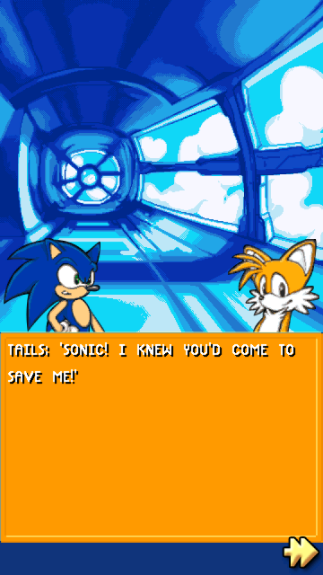
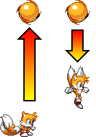
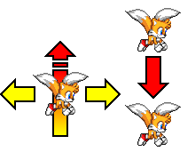
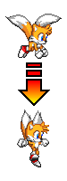
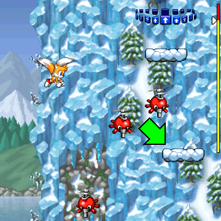
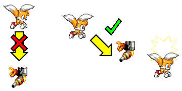

Miles "Tails" Prower
Character Description

BIOGRAPHY:
Tails is a gentle fox with 2 tails who happens to love robots. He can fly by making his tails spin like helicopter blades.
BRIEF GAMEPLAY DESCRIPTION:
Tails plays a role in the story and is a playable character in Sonic Jump Revival.
With his ability to stay in the air longer, Tails can be the preferred character of choice for beginners.
Unlocking Tails

Tails can be unlocked after clearing Mechanical Zone Act 3.
Sonic saves Tails after being kidnapped by Dr. Eggman.
Tails joins Sonic to find the last Chaos Emerald in Angel Island before Eggman does.
In the STORY MODE, you can watch the cutscenes as Tails after this point (except the end of COSMIC and BONUS zone).
Abilities
Normal jump

Tails has a normal jump height and falling speed.
Super Jump (Propeller Flight)
DESCRIPTION:
Tails' Super Jump is the Propeller Flight.
This ability allows him to perform a small extra jump and stay in the air slightly longer while spinning his tails.

FIRST COMMAND:
His Super Jump has a small jump height, but you can still make Tails move left or right while using it.
During his Super Jump, Tails stays slightly longer in the air and descends gently.

SECOND COMMAND:
Using the Super Jump command during the Propeller Flight makes Tails to cancel his flight and start falling.
This command is useful to land on platforms faster while using the Super Jump.
Gameplay Tips
Landing on further platforms

When using the Propeller Flight, you have more time to land on a platform before falling off.
Therefore, you can make Tails land of platforms located further away.
Attacking enemies with the Propeller Flight

When using the Propeller Flight, you can attack enemies at all sides.
But when descending, you can't attack enemies from below.
Instead, move Tails to the bottom-side of an enemy by touching it with his tails to defeat it.